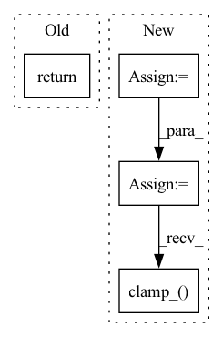

Pattern ID :9958
Before Change
elif self.pred_objective == "eps":
target = noise
return F.mse_loss(model_out, target)
def forward(self, img, *args, **kwargs):
b, c, h, w, device, img_size, = *img.shape, img.device, self.image_sizeAfter Change
loss = reduce(loss, "b ... -> b", "mean")
snr = log_snr.exp()
maybe_clip_snr = snr.clone()
if self.min_snr_loss_weight:
maybe_clip_snr.clamp_(min = self.min_snr_gamma)
if self.pred_objective == "v":
loss_weight = maybe_clip_snr / (snr + 1)
In pattern: SUPERPATTERN
Frequency: 4
Non-data size: 4
Instances Fragment ID: 35601518
Project Name: lucidrains/denoising-diffusion-pytorch
Commit Name: e6f2d01d453fc2597881ca477bdd7d545f93490a
Time: 2023-03-17
Author: lucidrains@gmail.com
File Name: denoising_diffusion_pytorch/simple_diffusion.py
M Class Name: GaussianDiffusion
N Class Name: GaussianDiffusion
M Method Name: p_losses(4)
N Method Name: p_losses(4)
M Parent Class: nn.Module
N Parent Class: nn.Module
M File Name: denoising_diffusion_pytorch/simple_diffusion.py
N File Name: denoising_diffusion_pytorch/simple_diffusion.py
M Start Line: 668
M End Line: 678
N Start Line: 675
N End Line: 701
Before Change
Args:
tensor (torch.Tensor): The image that needs to be converted to ``PIL.Image``.
return F.to_pil_image(tensor)
def convert_rgb_to_ycbcr(image: np.ndarray):After Change
if range_norm:
tensor = tensor.add_(1.0).div_(2.0)
if half:
tensor = tensor.half()
image = Image.fromarray(tensor.squeeze_(0).mul_(255).clamp_( 0, 255) .permute(1, 2, 0).to("cpu", torch.uint8).numpy())
return image
Fragment ID: 35601530
Project Name: lornatang/fsrcnn-pytorch
Commit Name: 03d5cd03ad3c13e301bfcf77904e4144d91fc8d2
Time: 2021-11-09
Author: liuchangyu1111@gmail.com
File Name: imgproc.py
M Class Name: AnonimousClass
N Class Name: AnonimousClass
M Method Name: tensor2image(3)
N Method Name: tensor2image(1)
M Parent Class:
N Parent Class:
M File Name: imgproc.py
N File Name: imgproc.py
M Start Line: 69
M End Line: 75
N Start Line: 83
N End Line: 105
Before Change
Returns:
PIL.Image: RGB image data.
return F.to_pil_image(tensor)
def center_crop(lr: np.ndarray, hr: np.ndarray, image_size: int, upscale_factor: int) -> Tuple[np.ndarray, np.ndarray]:After Change
>>> image = tensor2image(tensor, range_norm=False, half=False)
if range_norm:
tensor = tensor.add_(1.0).div_(2.0)
if half:
tensor = tensor.half()
image = tensor.squeeze_(0).permute(1, 2, 0).mul_(255).clamp_( 0, 255) .cpu().numpy().astype("uint8")
return image
Fragment ID: 35601514
Project Name: lornatang/esrgan-pytorch
Commit Name: 862981e47827602ecba051661722096086ff453e
Time: 2022-01-05
Author: liuchangyu1111@gmail.com
File Name: imgproc.py
M Class Name: AnonimousClass
N Class Name: AnonimousClass
M Method Name: tensor2image(3)
N Method Name: tensor2image(1)
M Parent Class:
N Parent Class:
M File Name: imgproc.py
N File Name: imgproc.py
M Start Line: 71
M End Line: 80
N Start Line: 75
N End Line: 94
Before Change
elif self.objective == "v":
target = alpha * noise - sigma * img
return F.mse_loss(pred, target)
// dataset classes
After Change
// min snr loss weight
snr = (alpha * alpha) / (sigma * sigma)
maybe_clipped_snr = snr.clone()
if self.min_snr_loss_weight:
maybe_clipped_snr.clamp_(min = self.min_snr_gamma)
if self.objective == "eps":
loss_weight = maybe_clipped_snr / snr
Fragment ID: 35601528
Project Name: lucidrains/recurrent-interface-network-pytorch
Commit Name: 77e4ced5cd8d091acae31ad2cb19a32f64a4eb3a
Time: 2023-03-18
Author: lucidrains@gmail.com
File Name: rin_pytorch/rin_pytorch.py
M Class Name: GaussianDiffusion
N Class Name: GaussianDiffusion
M Method Name: forward(2)
N Method Name: forward(2)
M Parent Class: nn.Module
N Parent Class: nn.Module
M File Name: rin_pytorch/rin_pytorch.py
N File Name: rin_pytorch/rin_pytorch.py
M Start Line: 812
M End Line: 823
N Start Line: 819
N End Line: 850